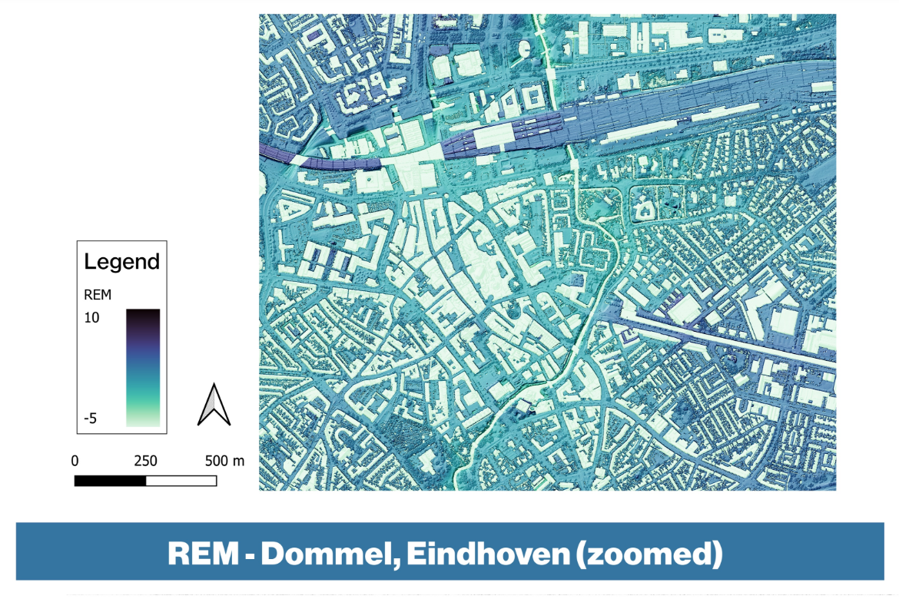

Relative Elevation Model
In this map, the relative elevation of the area surrounding the Dommel river in the Eindhoven region is depicted. It is presented as a stand alone poster format:
The elevation depicted is relative to the height of the riverbanks locally. Adittionally, here view a zoomed in map of the city centre:
Creating the Map:
Initially, it was key to decide on a target area and look for recent LiDAR data as a Digital Terrain Model (DTM) for this region. For this, I chose the region I'm from, Eindhoven, as this gave me some prior knowledge on the area and its river, the Dommel. After transferring the data to QGIS and merging the tiles, who's information was stored in separate files, it was important to apply a relevant color scheme. I chose this blue color scheme for its clarity and obvious thematic relevance whilst mapping water. After that, we made a cross-section layer, spanning the width of the rivers sussroundings, and applied a TIN interpolation, creating a new surface of our DTM using the triangulation method. We then subtracted this interpolated DTM layer off of the initial merged layer (Digital Elevation Model) to get the final Relative Elevation Model (REM) layer as a result. This realative elevation layer shows the height of the rivers surroundings compared to the river itself, thereby giving insights on flooding patterns and historic flow of the river. Applying an overlay of hill shading and a DSM layer gave us a more refined image as the final product. These added nuances were set to show starting at a certain zoom into the picture so as not to overcrowd the overall map (see the difference between the two above). The final posters were created by printing the maps and further stylizing them. The main focus here was to figure out a suitable layout.
The history of the Laak stream
'De Laak' was a stream that used to run east of Eindhovens city center (see middle image above). The small stream ran through, what was at the time, an area between two towns. In the 1900's, with the development of the area the stream was rerouted to run through the main dommel river. Now houses stand where there was once a stream (see top right image). To this day the relative elevation in the area shows this history.